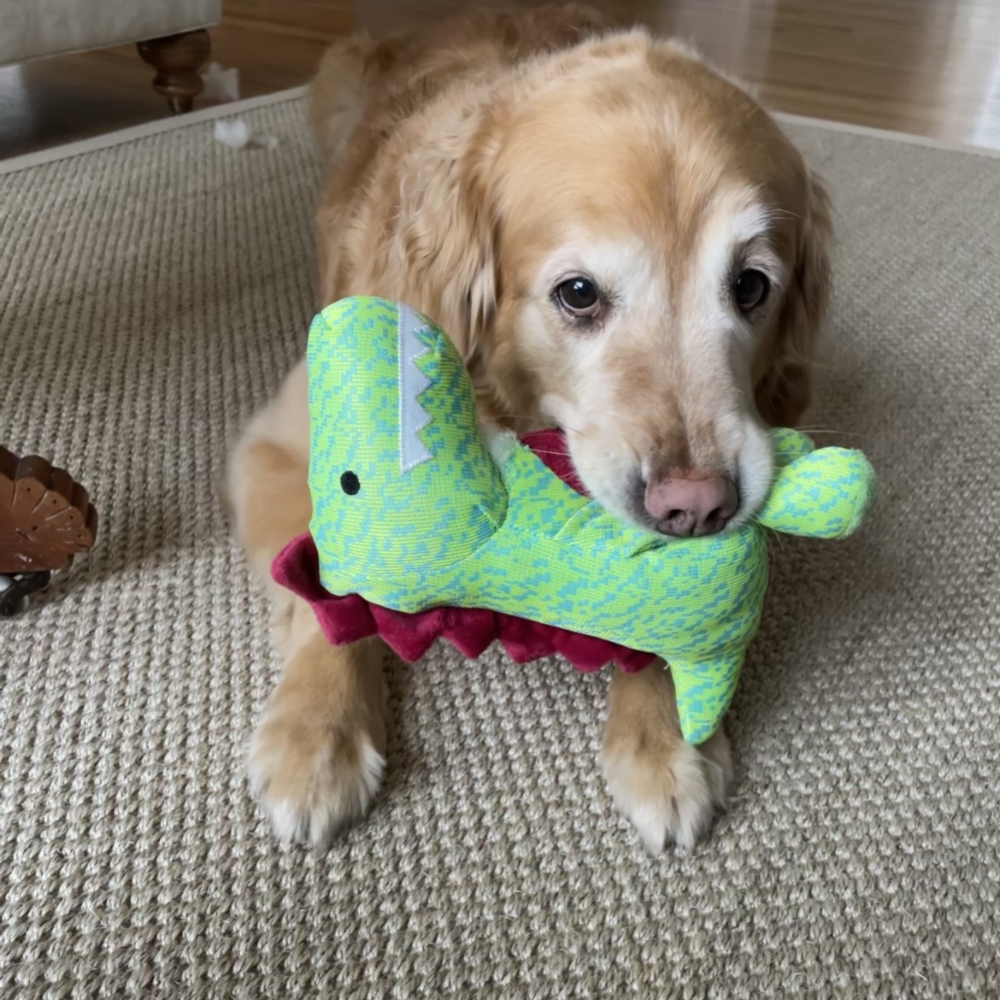
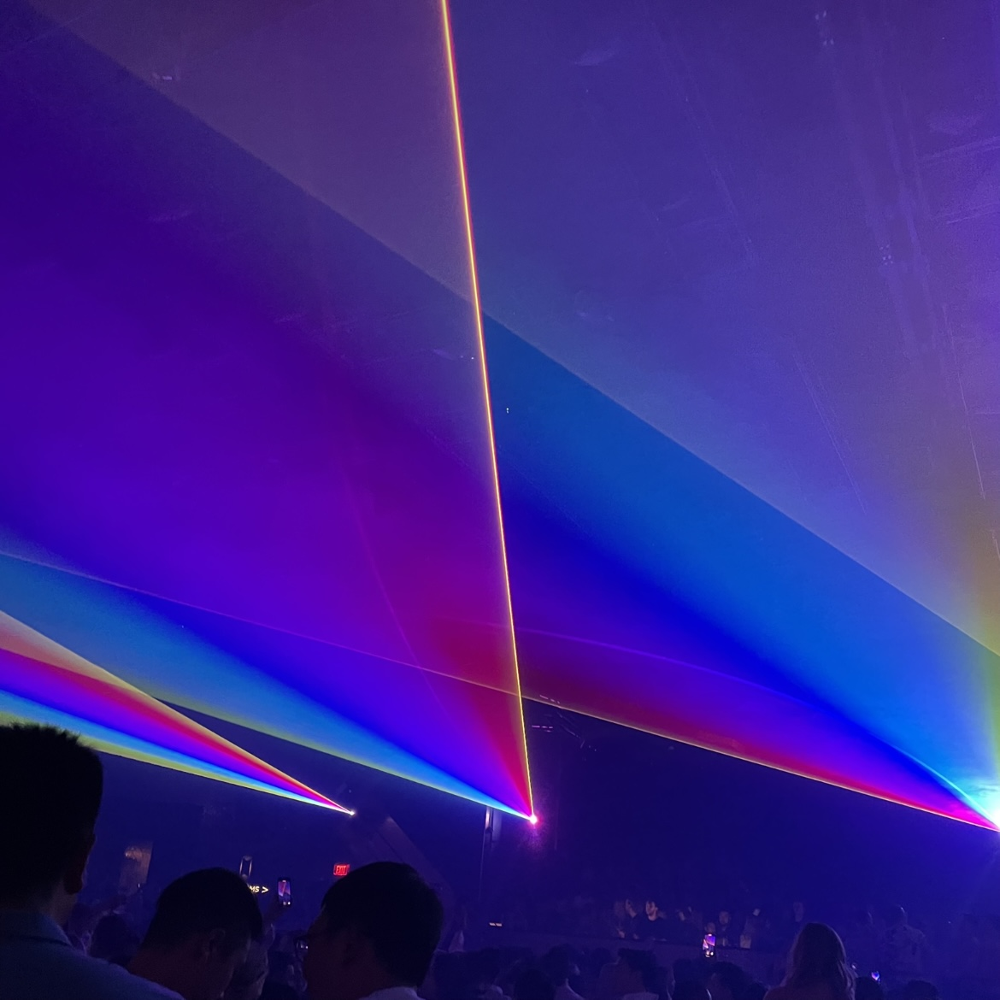
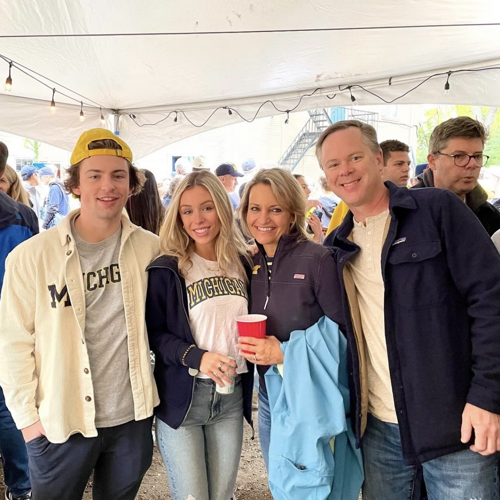

A Few of My Favorite Things
My name is Sydney Sella and I am a student at The University of Michigan studying Information Analysis. Though I love my classes and Michigan football, there are many things that I favorite outside of school.
My favorite things that I will highlight in this blog are my dog, my family and friends, and music. Navigate to the other parts of this webpage to learn more!


